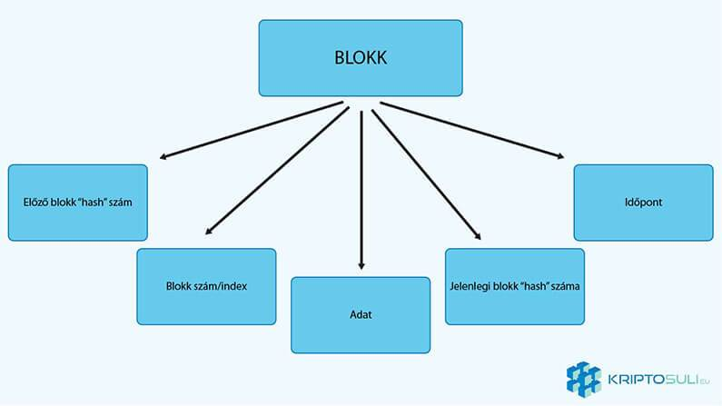
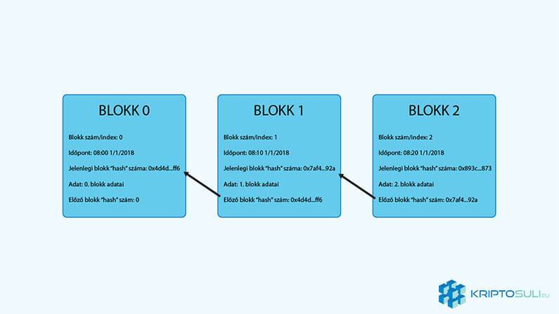

Mi az a blokklánc technológia? - Útmutató kezdőknek
Mi rejlik a motorháztető alatt? Hogy teljesen megértsük a kriptopénzek világát, szükséges megértenünk az alattuk lévő blokklánc technológiát amely nélkül, ma nem léteznének a kriptopénzek.
Mi az a blokklánc?
A blokklánc egy digitális, decentralizált, nyilvános főkönyv amelyen tranzakciókat és különböző adatokat tárolnak. Tranzakciókat összegyűjti egy blokkba, amelyeket időrendi sorban hozzácsatol a többi blokkhoz, innen a név blokklánc. Ez a blokklánc megengedi a felhasználóknak, hogy nyomon kövessék digitális pénzük tranzakcióit, egy harmadik központi fél nélkül.
Például Bitcoin tranzakciók nyomon követésére lehetőség van blockchain.info-n.
A blokklánchoz új blokkot csak a részvevők közötti egyetértéssel adható és miután hozzáadták az új blokkot soha többé nem lehet megváltoztatni. A blokkláncon minden valaha létrehozott tranzakció ellenőrizhető akár teljesen a kezdetekig is.
Hogyan működik?
Gondolj egy papírra, amire felírod az összes felhasználói tranzakciót. Amikor ez a papír megtelik, és nem tudsz több bejegyzést hozzáadni beteszed egy mappába és berakod a széfbe (blokk). A papír tartalmazza a küldőt, fogadót, az tranzakció összegét és, hogy mikor történt ez a tranzakció. Fontos, hogy ezt a papírt ne szerkeszd mivel ez a bizonyítéka a pénzmozgásnak. Mikor a papírt sikeresen behelyezted a széfbe, egy új papírt veszel elő amire újabb tranzakciókat jegyzel fel. Ezt a folyamatot ismétled újra és újra, egymás után rakva el a papírokat (lánc).
A blokk
A blokk a bizonyítéka a végrehajtott tranzakcióknak. A blokk tartalmazza az összes pénzmozgás adatait a blokklánc hálózaton az előző blokkokkal együtt.
Előző blokk „hash” száma: A „hash” szám egy teljesen egyedi azonosítója a blokknak. Ezzel a számmal azonosítja az előző blokkot.
Jelenlegi blokk "hash" száma: A jelenlegi blokk egyedi azonosítója, amihez csatlakozni fog a következő blokk.
Blokk szám/index szám:
A blokk sorszáma. 1, 2, 3... a végtelenségig.Adat: Az adat tartalmazza a feladó és küldő címét. A tranzakció összegét, és díját.
Időpont: A blokk készítésének idejét tartalmazza.
Használhatósága
Blokklánc technológia megoldást nyújt arra, hogy egymás számára ismeretlen felek, egyességet köthessenek egy közös digitális történetre alapozva. Ez a közös digitális történet fontos, mert elméletben a digitális tőke és tranzakciók könnyen hamisíthatók és duplikálhatók. A blokklánc technológia azonban megoldást kínál erre a problémára egy közvetítő fél bevonása nélkül.
Az eredetileg Bitcoin-hoz kidolgozott blokklánc technológiát azért hozták létre, hogy az emberek egymás között pénzt küldhessenek, manapság egyre több használhatóságát fedezik fel (lásd Ethereum), és a nem is olyan távoli jövőben a mindennapjaink része lesz.
Biztonsága:
Amíg nincs 100%-ig biztonságos rendszer, manapság nincs biztonságosabb a blokkláncnál. Minden tranzakciót, vagy érték mozgást a teljes hálózatnak ellenőrizni és érvényesíteni kell, tehát nem lehet, hogy az egyik fél azt mondja a tranzakció megtörtént a másik pedig azt, hogy nem. Ahhoz, hogy valaki ezt megtegye nem elég egy számítógépet feltörni, hanem a teljes hálózat minden számítógépét fel kellene törni. Ez pedig annyira közel van a lehetetlenhez amennyire csak lehetséges.
A „hash” szám fontossága:
Mint az előző szekcióban említettem, a „hash” szám egy egyedi azonosítója a blokknak. Innen jön a blokklánc biztonsága, ha valaki csak a legkisebb változtatást is elvégezné ezen a blokkon, a „hash” szám teljesen megváltozna, ezáltal nem illene a láncba. Mivel a főkönyv a hálózaton rengeted példányban létezik, ezért ezt a blokkot egyszerűen kiszavazná a rendszer.
Ez egy "hash" szám teszt.F4E6A6688E9D0EF24CE47B31752C774BD4B31FB1FC081DABFB54D95978487575
ez egy "hash" szám teszt.
1C839FF74FFE183ACBCE0F601A6F8130522726B248D0275417D8101C7212E320
Záró gondolatok
A blokklánc technológia alapjaiban fogja megváltoztatni a jövőt. Biztonsága, transzparens technológiája és decentralizáltsága forradalmi újdonságokat jelképeznek. Felhasználási területe hatalmas, ezért minden valószínűség szerint elengedhetetlen része lesz a mindennapjainknak.


2018. Január 05.